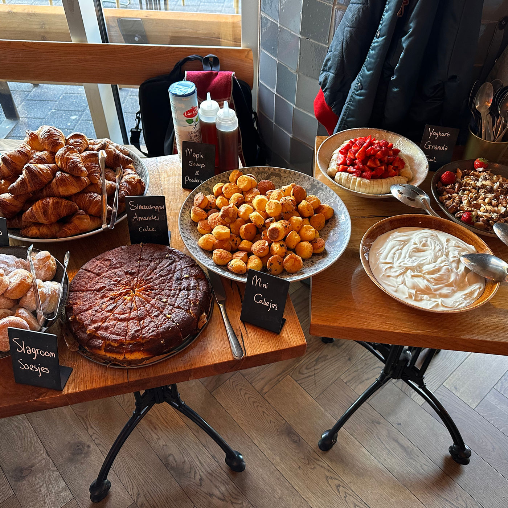
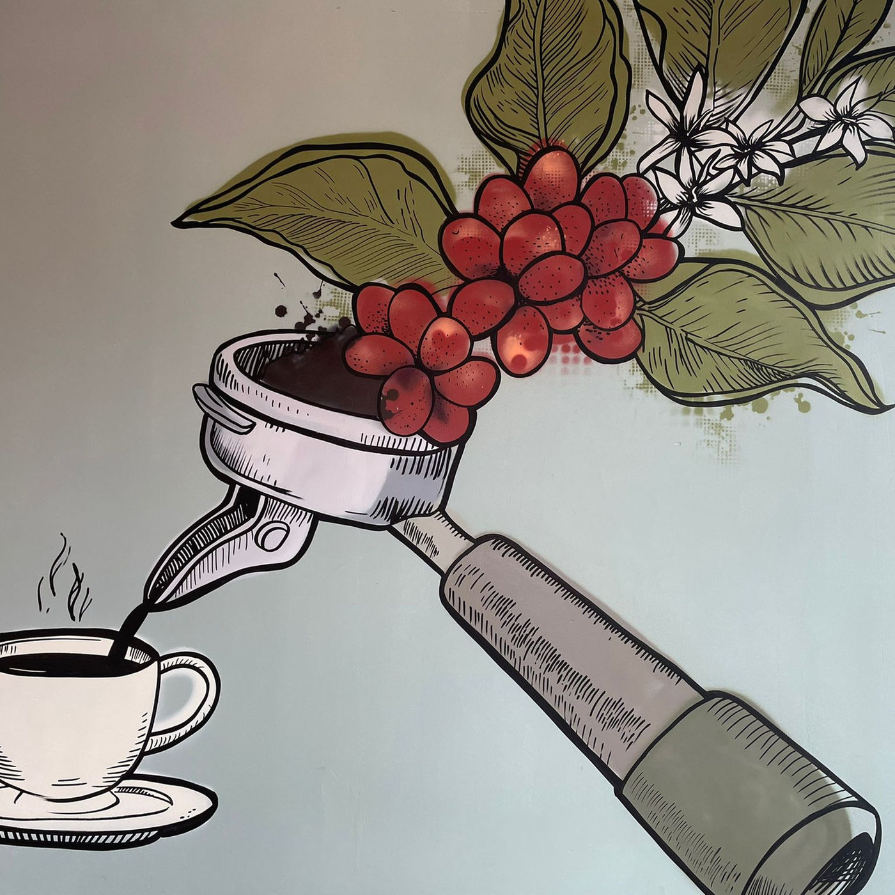
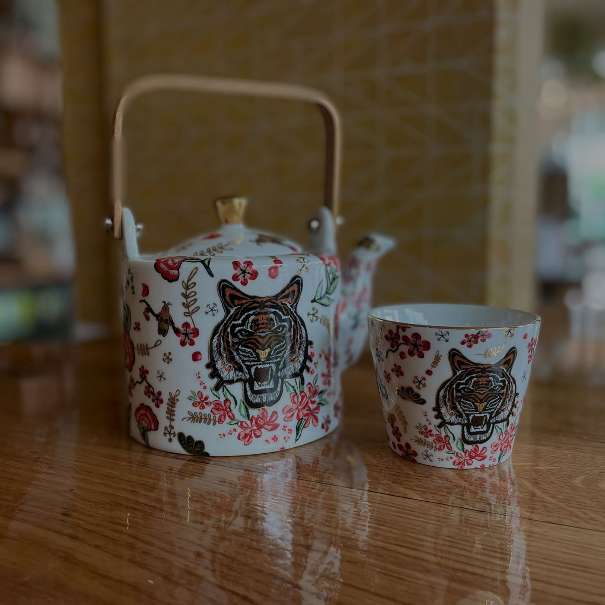
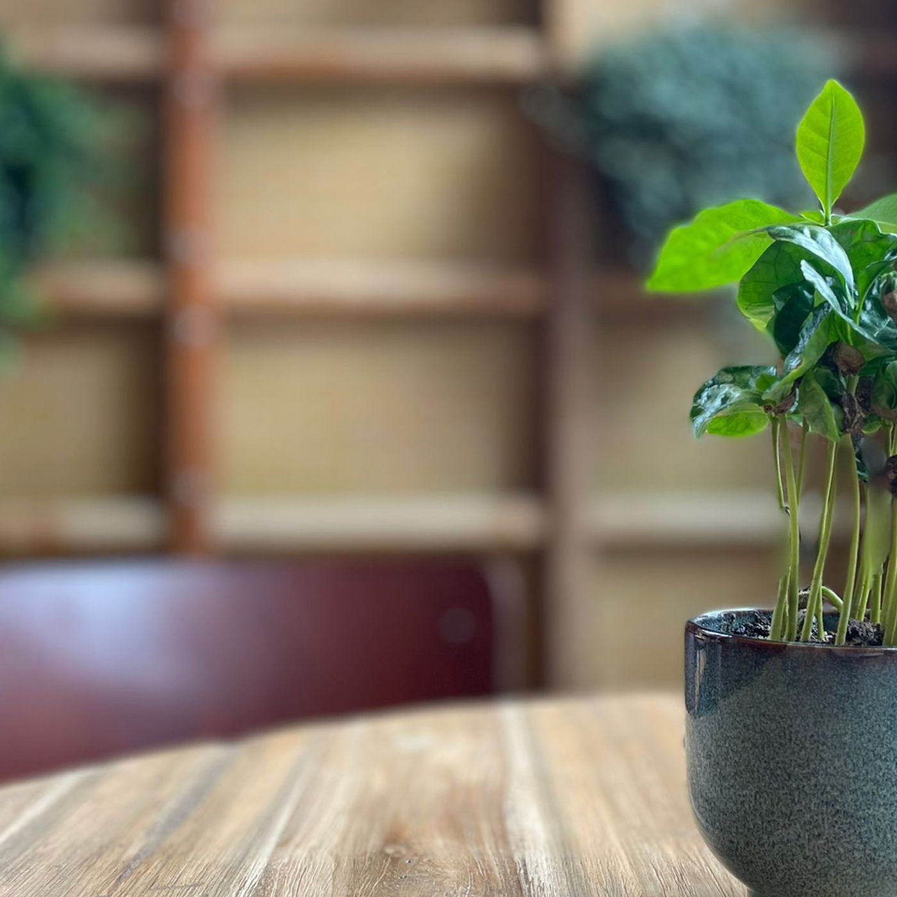

Coffee. [kaw-fee, kof-ee] noun
a magical substance that turns “leave me alone or die” into “good morning, honey!”.

Jan van Galenstraat 418a · Amsterdam
Koffie, ontbijt, lunch en een goede borrel op het zonnige terras. Een plek voor de buurt.
Coffee. [kaw-fee, kof-ee] noun
a magical substance that turns “leave me alone or die” into “good morning, honey!”.
Vandaag open
Reserveren gaat telefonisch. Op het terras reserveren we niet: wie er is, zit.
Van een croissant om acht uur tot een Negroni om tien uur ’s avonds. Kies een moment van de dag.
08:00 – 23:00
gemaakt door opa Jan
homemade by Opa Jan
gemaakt door opa Jan
homemade by Opa Jan
huisgemaakt met walnoten
homemade with walnuts
gemaakt van onze bekende boterkoek, met een topping van lemon curd
made from our famous butter cake, topped with lemon curd
huisgemaakt, gluten- en lactosevrij (kan sporen bevatten)
homemade, gluten- and lactose-free (may contain traces)
van de Browniehemel
from Browniehemel
neem een kijkje bij de bar
take a look at the bar
+ jam, chocopasta of boter 0,50 · + kaas 1,00
+ jam, chocolate spread or butter · + cheese
met Griekse yoghurt en wisselend fruit
with Greek yoghurt and fruit
oats met blauwe bessen, afgetopt met pecannoten en een compote van blauwe bessen
oats with blueberries, topped with pecan nuts and a blueberry compote
koffie of thee, verse jus d'orange, croissant met jam en keuze uit huisgemaakte granola of overnight oats
coffee or tea, fresh orange juice, croissant with jam, and a choice of homemade granola or overnight oats
08:30 – 16:00
three pancakes with Greek yogurt, maple syrup, and seasonal fruit · + bacon 2,00
spinach, spring onion and pecorino · + bacon 2,00 · + salmon 3,50
poached egg in a sauce of bell pepper, tomato, and chickpeas, served with harissa yogurt, chives, and almond flakes
ask the staff about it or see the chalkboard; served with bread
with little gem, boiled egg, bacon, cherry tomato, pecorino, homemade Caesar dressing, croutons, and chives · + crunchy chicken 4,00
Ons boeren desembrood komt van Fort Negen.
an extra slice of bread
with tomato, mustard mayonnaise, chives, and mixed lettuce
with grilled vegetables, red onion, tzatziki, mixed lettuce, and pita bread
with grilled vegetables, red onion, tzatziki, mixed lettuce, and pita bread
two poached eggs with salmon, hollandaise sauce, and chives on a brioche bun
two poached eggs with bacon, guacamole, baby spinach, crispy chili oil, hollandaise sauce, and chives on sourdough bread from Fort 9
two poached eggs with baby spinach, hollandaise sauce, and chives on a brioche bun
chicken roulade with ras el hanout, stracciatella, and avocado mint cream
two beef croquettes on bread with mustard
two oyster mushroom croquettes on bread with truffle mayonnaise and baby spinach
changing vegetarian sandwich; ask the staff about it or see the chalkboard
Black Angus burger on a brioche bun with cheddar, bacon, pickles, little gem lettuce, and Beis sauce, served with fries
vegetarian burger on a brioche bun with cheddar, pickles, little gem, and Beis sauce, served with fries
served with fries; ask the staff about it or see the chalkboard
snacks 15:00 – 23:00 · delen 17:00 – 21:00
mix van verschillende olijven
mix of different olives
met cheddar, huisgemaakte salsa, crème fraîche, guacamole en jalapeño
with cheddar, homemade salsa, crème fraîche, guacamole and jalapeño
6 stuks
6 pieces
6 stuks
6 pieces
6 stuks
6 pieces
8 stuks
8 pieces
bitterballen 4 st., loempia 4 st., kaastengels 4 st.
bitterballen, spring rolls and cheese sticks, 4 pcs each
vega bitterballen 4 st., loempia 4 st., kaastengels 4 st.
veggie bitterballen, spring rolls and cheese sticks, 4 pcs each
met mayonaise
with mayonnaise
met truffelmayonaise
with truffle mayonnaise
coppa di parma, venkelsalami, truffelsalami
coppa di parma, fennel salami, truffle salami
geserveerd met brood
served with bread
een krokante California sushi rol, geserveerd met wasabi mayo, sojasaus en furikake
a crunchy California sushi roll with wasabi mayo, soy sauce and furikake
een krokante vegan sushi rol gevuld met gegrilde paprika, wortel, wakame en edamame mousse; met wasabi mayo, sojasaus en furikake
a crunchy vegan sushi roll with grilled bell pepper, carrot, wakame and an edamame mousse
bao bun gevuld met rendang, atjar, crispy onion, sriracha mayonaise en bosui
bao bun filled with rendang, pickled vegetables, crispy onion, sriracha mayo and spring onion
met Cajun gemarineerde tijgergarnalen uit de oven, geserveerd met citroenmayonaise
oven-baked tiger prawns marinated in Cajun spices, served with lemon mayo
geserveerd met gochujang mayo, bosui en sesamzaad
served with gochujang mayo, spring onion and sesame seeds
knapperige Japanse dumplings, gevuld met groenten, met een zwarte-knoflooksojasaus
crispy Japanese dumplings filled with vegetables, with a black garlic soy sauce
afgetopt met za'atar, dille, boekweit en olijfolie, met pitabrood
topped with za'atar, dill, buckwheat and olive oil, served with pita bread
met honing en walnoten, geserveerd met brood
with honey and walnuts, served with bread
patat loaded met rendang of vega rendang, atjar en crunchy onion
loaded fries with rendang or vegan rendang, atjar and crunchy onion
17:00 – 21:00
beef steak, served with fries and salad; choice of pepper sauce or herbed butter
Black Angus burger on a brioche bun with cheddar, bacon, pickles, little gem and Beis sauce, served with fries
homemade rendang, served with rice, pickled vegetables, spicy green beans and cassava
with grilled vegetables, red onion, tzatziki, mixed greens, pita bread and fries
pie with chicken ragout, mushrooms, dried apricot and spring onion, served with a mixed salad with a roasted garlic dressing
crispy-coated hake, paired with fries and our homemade tartar sauce
vegetarian burger on a brioche bun with cheddar, pickles, little gem, and Beis sauce, served with fries
with grilled vegetables, red onion, tzatziki, mixed lettuce, pita bread and fries
homemade jackfruit rendang, served with rice, pickles, sambal green beans, and cassava
with little gem, boiled egg, bacon, cherry tomato, pecorino, homemade Caesar dressing, croutons, and chives · + crunchy chicken 4,00
with mayonnaise
with truffle mayonnaise
with mayonnaise
made from our famous butter cake, with a topping of lemon curd
with vanilla ice cream
met vanilleijs
vegan ice cream bonbon in the flavors cookie dough or chocolate truffle
Kahlua, vodka and espresso
our sweets menu features many more delicious treats
get one of our ice cream flavors at our ice cream stand next door
de hele dag
Wij serveren ook lactosevrije melk: haver, amandel en kokos.
Onze theesmaken van Teacultures: Black English blend, Pure earl grey, China finest jasmine, Oriental green, African rooibos, Ginger lemongrass.
de hele dag
100% natural soda: lemon, mint & apple · rose, cardamom, pear, apple · carrot, ginger, apple · blueberry, lavender, blackcurrant & apple
de hele dag
33 cl | pint
fruitig, fris met zachte body
evenwichtig en fris, tropische aroma's gecombineerd met vanille
aroma's van passiefruit, anijs, venkel en tropisch fruit; een klein bittertje, een mooie frisheid met een zachte afdronk
vol van smaak en mooi in balans; een zwoele Italiaan met een warm en rond karakter
kersenrode heldere kleur, sappig, prettig bittertje en druiftannines
zwart fruit, pruimen, kruiden en kokos; zachte tannines en een lange intense afdronk
lichtroze van kleur; een frisse wijn met een zachte, lange afdronk met hints van zure kersen
een aangenaam droge, frisse en fruitige cava met elegante belletjes
cava en verse jus d'orange
Aperol, cava en bruiswater
wodka, Big Tom en limoen
wodka, gingerbeer en shot limoensap
Campari, Willem's Wermoed en gin
bruine rum, gingerbeer en Angostura bitters
Kahlua, wodka en espresso
gin, rabarberlikeur, limoensap, bruiswater, suikersiroop en Angostura bitters
limoen
sinaasappel, kruidnagel
komkommer
Wisselende gerechten van het moment. Kijk op het krijtbord of vraag het ons.
De originele kaarten: menukaart (pdf) en drankenkaart (pdf).

Boes & Beis is voor de buurt; een plek om te vluchten van het thuiswerken, van het ziekenhuis; een ontmoetingsplaats voor een spelletje 30 Seconds.
Wij streven naar consistent goede koffie, een lekkere maar ook bewuste menukaart en uiteraard een goede borrel op het zonovergoten terras. De kids kunnen lekker een ijsje halen als de ouders genieten van een verdiend speciaal biertje of wijntje.
Maar vergeet vooral het heerlijke ontbijt niet, ook voor onderweg!
IJs haal je bij IJscuypje, ons ijssalonnetje naast de deur.
“From 17:15 there is no wifi anymore, but I promise… you will find a better connection.”

Bij Boes & Beis willen we graag een stukje teruggeven aan de maatschappij. Daarom hebben we geïnvesteerd in een filtersysteem voor kraanwater, waarmee we kraanwater aan kunnen bieden zonder verpakkings- en transportkosten.
Daarnaast doneren we €1,- per glas of fles aan watertorens in Benin, waar de plattelandsbevolking nog steeds kampt met watertekort.
At Boes & Beis we would like to give something back to society: we filter our own tap water, and donate €1,- per glass or bottle to water towers in Benin.
Meer over het projectBen je op zoek naar een plek waar je terecht kan met een grote groep voor ontbijt, lunch, diner of een borrel? Dat kan ook bij ons! Stuur even een mail met je wensen. Dan nemen wij snel contact op om alles door te spreken.
Mail evenementen@boesenbeis.nl
Zin om bij Boes & Beis te werken? Laat je gegevens achter en vertel waar je voor wilt solliciteren.
+31 20 775 0412
info@boesenbeis.nl